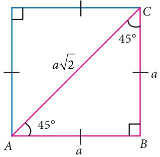
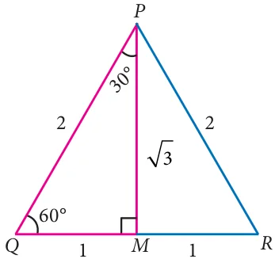
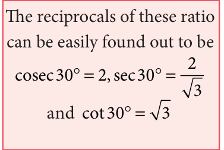
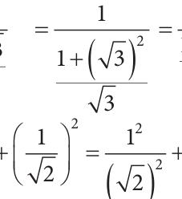
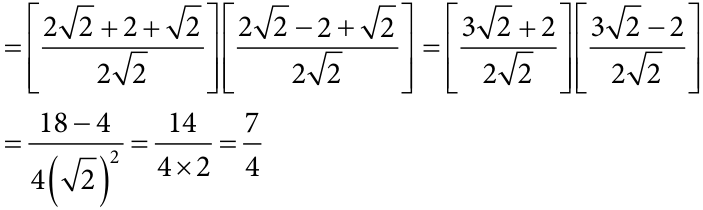

<!DOCTYPE html>
<html lang="en">
<head>
<meta charset="UTF-8">
<meta name="viewport" content="width=device-width,initial-scale=1">
<title>6.2 Trigonometric Ratios of Some Special Angles — Trigonometry</title>
<meta name="description" content="Class 9 Mathematics · Trigonometry · 6.2 Trigonometric Ratios of Some Special Angles">
<link rel="icon" href="data:image/svg+xml,<svg xmlns='http://www.w3.org/2000/svg' viewBox='0 0 100 100'><text y='.9em' font-size='90'>📘</text></svg>">
<link rel="stylesheet" href="../../../assets/book.css">
<link rel="stylesheet" href="https://cdn.jsdelivr.net/npm/katex@0.16.11/dist/katex.min.css" crossorigin="anonymous">
</head>
<body>
<header class="topbar">
<div class="topbar-in">
  <div class="crumb">
    <span class="c1"><a href="../../../index.html">Library</a> · <a href="../../index.html">Class 9 Mathematics</a></span>
    <span class="c2">Trigonometry · 6.2 Trigonometric Ratios of Some Special Angles</span>
  </div>
  <a class="tb-btn" data-nav="prev" href="../../06-trigonometry/02-exercise-6.1/index.html" title="Exercise 6.1">←</a>
  <details class="drawer"><summary class="tb-btn" title="Sections in this chapter">☰</summary>
<div class="drawer-panel"><div class="dh">Trigonometry</div><a href="../01-chapter-opener/index.html">Chapter opener; 6.1 Introduction</a><a href="../02-exercise-6.1/index.html">Exercise 6.1</a><a href="../03-trigonometric-ratios-of-some-special-angles-6.2/index.html" aria-current="page">6.2 Trigonometric Ratios of Some Special Angles</a><a href="../04-exercise-6.2/index.html">Exercise 6.2</a><a href="../05-trigonometric-ratios-for-complementary-angles-c-6.3/index.html">6.3 Trigonometric Ratios for Complementary Angles C</a><a href="../06-exercise-6.3/index.html">Exercise 6.3</a><a href="../07-method-of-using-trigonometric-table-6.4/index.html">6.4 Method of using Trigonometric Table</a><a href="../08-exercise-6.4/index.html">Exercise 6.4</a><a href="../09-exercise-6.5/index.html">Exercise 6.5</a><a href="../10-summary/index.html">Points to Remember</a><a href="../11-ict-corner/index.html">ICT Corner</a></div></details>
  <a class="tb-btn" data-nav="next" href="../../06-trigonometry/04-exercise-6.2/index.html" title="Exercise 6.2">→</a>
  <button class="tb-btn" data-theme-toggle title="Toggle light / dark" aria-label="Toggle light or dark theme">◐</button>
</div>
<div class="progress"><span style="width:69.4%"></span></div>
</header>
<main class="wrap">
<div class="sec-head">
  <p class="eyebrow"><a href="../index.html">Chapter 6 · Trigonometry</a></p>
  <h1>6.2 Trigonometric Ratios of Some Special Angles</h1>
  <p class="sec-meta">Textbook pages 7–11 · 11 figures</p>
</div>
<article class="prose">
<p>The values of trigonometric ratios of certain angles can be obtained geometrically. Two special triangles come to help here.</p>
<h3 id="s-6-2-1-trigonometric-ratios-of-45">6.2.1 Trigonometric ratios of \(45 ^{\circ}\)</h3>
<figure class="fig side-fig"></figure>
<p>Consider a triangle ABC with angles \(45 ^{\circ}\) , \(45 ^{\circ}\) and \(90 ^{\circ}\) as shown in the figure 6.9.</p>
<p>It is the shape of half a square, cut along the square’s diagonal. Note that it is also an isosceles triangle (both legs have the same length, a units).</p>
<p>Use Pythagoras theorem to check if the diagonal is of Fig. 6.9 length a 2 .</p>
<p>Now, from the right-angled triangle ABC,</p>
<div class="mathblock"><p>sin45 \(= = = =\) hypotenuse \(AC \frac{a}{a2} 2\)</p></div>
<p>_{o} oppositeside BC 1</p>
<figure class="fig side-fig"></figure>
<div class="mathblock"><p>cos45 \(= = = =\) hypotenuse \(AC \frac{a}{a2} 2\)</p></div>
<p>_{o} adjacent side AB 1</p>
<p class="lead">_{o} opposite side BC a</p>
<div class="mathblock"><p>tan45 \(= = = = 1\)</p></div>
<p class="lead">adjacent side AB a</p>
<h3 id="s-6-2-2-trigonometric-ratios-of-30-and-60">6.2.2 Trigonometric Ratios of \(30 ^{\circ}\) and \(60 ^{\circ}\)</h3>
<figure class="fig side-fig"></figure>
<p>Consider an equilateral triangle PQR of side length 2 units.</p>
<p>Draw a bisector of \(\angle P\). Let it meet QR at M.</p>
<div class="mathblock"><p>\(PQ = QR = RP = 2\) units.</p></div>
<p>\(QM = MR = 1\) unit (Why?)</p>
<p>Knowing PQ and QM, we can find PM, using Pythagoras</p>
<p>theorem,</p>
<p class="caption">Fig. 6.10</p>
<figure class="fig side-fig"></figure>
<p>we find that \(PM = 3\) units.</p>
<p>Now, from the right-angled triangle PQM,</p>
<p>_{o} oppositeside QM 1</p>
<div class="mathblock"><p>sin30 \(= = =\)</p></div>
<p>hypotenuse PQ 2 cos30o = adjacent side \(= PM = 3\) hypotenuse PQ 2 tan30o = opposite side \(= QM = 1\) adjacent side PM 3</p>
<p>We will use the same triangle but the other angle of measure \(60 ^{\circ}\) now.</p>
<p>_{o} oppositeside PM 3</p>
<p>sin60 \(= = =\) The reciprocals of these ratio hypotenuse PQ 2 can be easily found out to be</p>
<p>\(cos60^{o} =\) adjacent side \(= QM = 1\) cosec60 2 ; sec60 2 hypotenuse \(PQ 2 3 tan60^{o} =\) opposite side \(= PM = 3 = 3\) and cot60 1 adjacent side QM 1 3</p>
<h3 id="s-6-2-3-trigonometric-ratios-of-0-and-90">6.2.3 Trigonometric ratios of \(0 ^{\circ}\) and \(90 ^{\circ}\)</h3>
<p>To find the trigonometric ratios of \(0 ^{\circ}\) and \(90 ^{\circ}\) , we take the help of what is \(^{P}^{(cos}^{q}\), \(sin^{q}^{)}\) known as a unit circle. _{sin}_{q}</p>
<p>A unit circle is a circle of unit radius _{O} _{cos}_{q} _{Q} _{X} (that is of radius 1 unit), centred at the origin.</p>
<p>Why make a circle where the radius is 1unit?</p>
<p>This means that every reference Fig. 6.11 triangle that we create here has a hypotenuse of 1unit, which makes it so much easier to compare angles and ratios.</p>
<figure class="fig side-fig"></figure>
<p>We will be interested only in the positive values since we consider ‘lengths’ and it is hence enough to concentrate on the first quadrant. Fig. 6.12</p>
<p>We can see that if P(x,y) be any point on the unit circle in the first quadrant and POQ q</p>
<p>sinq \(= PQ = y = y\) ; cosq \(= OQ = x = x\) ; tanq \(= PQ = y OP 1 OP 1 OQ x\)</p>
<p>When q 0 , OP coincides with OA, where A is (1,0) giving \(x =1\), \(y = 0\) .</p>
<p>We get thereby,</p>
<p>sin0 \(^{\circ} = 0\) ; cosec0 \(^{\circ} =\) not defined (why?)</p>
<p>cos0 \(^{\circ} = 1\) ; sec0 \(^{\circ} = 1\)</p>
<p>tan0 \(^{\circ} = \frac{0}{1} = 0\) ; cot0 \(^{\circ} =\) not defined (why?)</p>
<p>When q 90 , OP coincides with OB, where B is (0,1) giving \(x = 0\), \(y =1\).</p>
<p>Hence,</p>
<p>sin90 1 ; cosec90 \(^{\circ} = 1\)</p>
<p>cos90 0 ; sec90 \(^{\circ} =\) not defined</p>
<p>tan90 \(^{\circ} = \frac{1}{0} =\) not defined ; cot90 0</p>
<p>Let us summarise all the results in the table given below:</p>
<figure class="fig table-fig wide"></figure>
<figure class="fig"></figure>
<p>Evaluate: (i) sin cos (ii) tan60˚ cot60˚</p>
<figure class="fig"></figure>
<p>\(\frac{tan45}{tan30tan60}\)</p>
<ul class="qlist">
<li><span class="mk">(iv)</span><span class="lt">sin cos</span></li>
</ul>
<h4 class="callout-h" id="s-solution">Solution</h4>
<ul class="qlist">
<li><span class="mk">(i)</span><span class="lt">sin30 cos30 \(\frac{1}{2} 3 \frac{13}{2}\)</span></li>
<li><span class="mk">(ii)</span><span class="lt">tan60˚ cot60˚</span></li>
<li><span class="mk">(iii)</span><span class="lt">\(\frac{tan45}{tan30tan60} \frac{1}{13} \frac{1}{13} =\)</span></li>
</ul>
<figure class="fig"></figure>
<ul class="qlist">
<li><span class="mk">(iv)</span><span class="lt">sin 45 cos    \(\frac{11}{22} 1\)</span></li>
</ul>
<p>_{2}  </p>
<p>Thinking Corner</p>
<p>Three natural numbers are called as Pythagorean triplets if they form the sides of a right angled triangle. For example,</p>
<ul class="qlist">
<li><span class="mk">(i)</span><span class="lt">3, 4, 5 (ii) 5, 12, 13 (iii) 7, 24, 25</span></li>
</ul>
<p>Multiply each number in any of the above Pythagorean triplet by a non-zero constant. Verify whether each of the resultant set so obtained is also a Pythagorean triplet or not.</p>
<h4 class="callout-h" id="s-example-6-6">Example 6.6</h4>
<p>Find the values of the following:</p>
<ul class="qlist">
<li><span class="mk">(i)</span><span class="lt">(cos0 sin45 sin30 )(sin90 cos45 cos60 )</span></li>
<li><span class="mk">(ii)</span><span class="lt">tan 60 2tan 45 cot 30 2sin \(30 \frac{3}{4}\) cosec 45</span></li>
</ul>
<h4 class="callout-h" id="s-solution">Solution</h4>
<ul class="qlist">
<li><span class="mk">(i)</span><span class="lt">(cos0 sin45 sin30 )(sin90 cos45 cos60 )</span></li>
</ul>
<p>1 12 12 1 12 12</p>
<figure class="fig"></figure>
<p>   </p>
<p>tan tan cot sin \(\frac{3}{4}\) cosec</p>
<div class="mathblock"><p>2 1( )   \(\frac{13}{24}\)   \(\frac{13}{22} \frac{4}{2}\)</p></div>
<h4 class="callout-h" id="s-note">Note</h4>
<ul class="qlist">
<li><span class="mk">(i)</span><span class="lt">In a right angled triangle, if the angles are in the ratio \(45 ^{\circ}\) : \(45 ^{\circ} :90 ^{\circ}\) , then the</span></li>
</ul>
<p>sides are in the ratio 1:1: 2 .</p>
<ul class="qlist">
<li><span class="mk">(ii)</span><span class="lt">Similarly, if the angles are in the ratio \(30 ^{\circ} :60 ^{\circ} :90 ^{\circ}\) , then the sides are in the</span></li>
</ul>
<p>ratio 1: 3 :2 . (The two set squares in your geometry box is one of the best example for the above two types of triangles).</p>
</article>
<nav class="pager"><a class="" data-nav="prev" href="../../06-trigonometry/02-exercise-6.1/index.html"><span class="dir">← Previous</span><span class="t">Exercise 6.1</span><span class="ch">Trigonometry</span></a><a class="nx" data-nav="next" href="../../06-trigonometry/04-exercise-6.2/index.html"><span class="dir">Next →</span><span class="t">Exercise 6.2</span><span class="ch">Trigonometry</span></a></nav>
</main><footer class="site">Generated from the source textbook PDFs · text, figures and exercises belong to their respective publishers.</footer><script defer src="https://cdn.jsdelivr.net/npm/katex@0.16.11/dist/katex.min.js" crossorigin="anonymous"></script>
<script defer src="https://cdn.jsdelivr.net/npm/katex@0.16.11/dist/contrib/auto-render.min.js" crossorigin="anonymous"
  onload="renderMathInElement(document.body,{delimiters:[
    {left:'\\(',right:'\\)',display:false},
    {left:'$$',right:'$$',display:true},
    {left:'\\[',right:'\\]',display:true}],throwOnError:false,ignoredTags:['script','noscript','style','textarea','pre','code']})"></script>
<script src="../../../assets/book.js"></script>
<script defer src="../../../../assets/search.js"></script>
</body>
</html>
